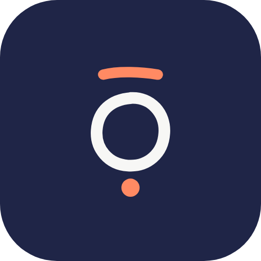

Small, fast Android tools.
A fast remote, screen mirror, apps and files tool for Android TV, Google TV and Android boxes. No account, no ads, no cloud.
Get it on Google Play
Privacy Policy · samzlabpk@gmail.com